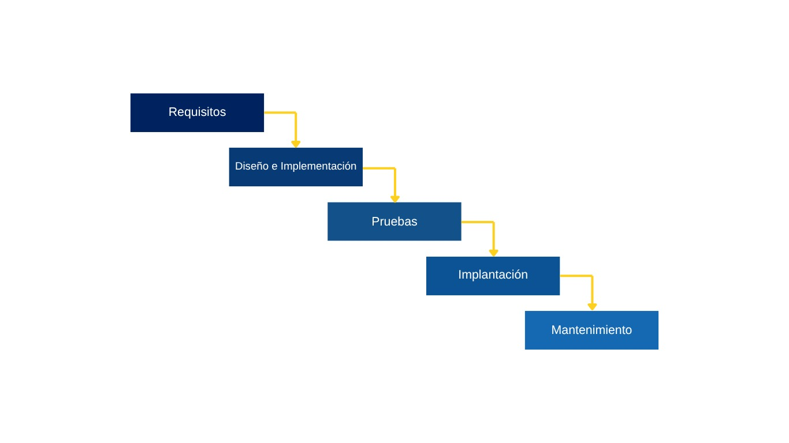

El Ciclo de Vida del Desarrollo de Software (SDLC) es el proceso que define las etapas necesarias para crear un software de calidad. Cada fase tiene como objetivo planificar, construir, probar e implementar el sistema garantizando que cumpla con las necesidades del usuario.
Importancia: El SDLC permite organizar el trabajo, reducir errores y garantizar que el software sea confiable, mantenible y útil para los usuarios.
El modelo en cascada es uno de los enfoques más antiguos y estructurados para el desarrollo de
software. Se basa en una secuencia rígida de etapas, donde cada fase debe completarse antes de pasar
a la siguiente. El progreso fluye como una cascada, de manera descendente, desde la definición de
requisitos hasta la entrega final del producto.
El proceso comienza con el análisis de requisitos, donde se identifican las necesidades del cliente
y las funciones que el sistema debe cumplir. Luego se realiza el diseño del sistema, en el cual se
define la arquitectura general, los módulos, las bases de datos y las interfaces. Posteriormente,
los desarrolladores llevan a cabo la codificación o programación del software, transformando los
diseños en un sistema funcional.
Una vez finalizado el desarrollo, se realizan las pruebas para garantizar que el software cumpla con
los requisitos establecidos y funcione correctamente. Finalmente, se procede a la implementación o
despliegue, instalando el sistema en el entorno de trabajo, y se continúa con el mantenimiento, que
incluye corrección de errores, actualizaciones y mejoras a lo largo del tiempo.
El modelo en cascada se utiliza en proyectos pequeños, con requisitos bien definidos desde el principio y pocas posibilidades de cambio. También es apropiado en entornos donde se exige una documentación completa, como proyectos gubernamentales, institucionales o académicos.
El modelo en V, conocido también como modelo de Verificación y Validación, es una evolución del
modelo en cascada que incorpora la revisión y prueba del software en todas sus etapas. Su nombre
proviene de la forma de la letra “V”, ya que cada fase de desarrollo tiene una fase de prueba
equivalente.
En este modelo, el lado izquierdo de la “V” representa las etapas de análisis y diseño, mientras que
el lado derecho corresponde a las pruebas asociadas. Por ejemplo, los requisitos del sistema se
validan mediante pruebas de aceptación; el diseño general se prueba con pruebas de sistema; el
diseño detallado se verifica a través de pruebas de integración; y la codificación se evalúa con
pruebas unitarias.
Este enfoque garantiza que cada componente sea revisado desde su concepción hasta su validación
final, reduciendo errores y asegurando una calidad superior en el producto final.
Este modelo es ideal para proyectos donde la calidad, seguridad y fiabilidad son críticas, como en el desarrollo de software médico, financiero, militar o aeronáutico. También es recomendable en proyectos que requieren pruebas exhaustivas y trazabilidad completa de los requisitos.
El modelo iterativo e incremental combina dos estrategias complementarias que permiten desarrollar software de forma más flexible y adaptativa. En su parte iterativa, el sistema se construye en ciclos repetidos o iteraciones, donde cada ciclo revisa, mejora y amplía lo ya desarrollado. En su aspecto incremental, el software se entrega en pequeñas partes funcionales —llamadas incrementos— que se van sumando hasta completar el producto final. Cada iteración incluye las etapas de análisis, diseño, desarrollo y pruebas, permitiendo que el cliente reciba versiones parciales del producto que puede utilizar y evaluar. Esto fomenta la retroalimentación constante, facilita la detección temprana de errores y mejora la satisfacción del usuario al involucrarse activamente en el proceso.
Este modelo es apropiado para proyectos grandes, innovadores o en los que los requisitos cambian con frecuencia. También es ideal cuando se desea obtener retroalimentación temprana del cliente o se necesita lanzar versiones iniciales al mercado rápidamente.
Las metodologías ágiles surgieron como respuesta a las limitaciones de los modelos tradicionales. Su propósito principal es ofrecer un proceso de desarrollo flexible, centrado en las personas, la colaboración y la entrega continua de valor al cliente. En lugar de seguir un plan estricto y lineal, las metodologías ágiles se adaptan al cambio y priorizan la comunicación y la mejora constante.
Scrum es una de las metodologías ágiles más populares y efectivas. Se basa en el trabajo por ciclos
cortos llamados Sprints, que suelen durar entre una y cuatro semanas. Durante cada Sprint, el equipo
planifica, desarrolla, prueba y entrega una parte funcional del producto, conocida como incremento.
Este enfoque iterativo permite obtener resultados tangibles al final de cada ciclo, lo que garantiza
una mejora continua y una respuesta rápida ante los cambios.
Scrum se estructura en torno a tres roles principales: el Product Owner, encargado de priorizar las
tareas y mantener la lista de requisitos (Product Backlog); el Scrum Master, responsable de guiar al
equipo y asegurar que se cumplan los principios ágiles; y el Equipo de Desarrollo, que trabaja de
forma autónoma y colaborativa para construir el producto.
A lo largo de cada Sprint, se realizan reuniones específicas conocidas como ceremonias: la
planificación del Sprint, las reuniones diarias (Daily Scrum), la revisión del Sprint y la
retrospectiva. Estas actividades fomentan la comunicación, la transparencia y la mejora continua.
Scrum es ideal para proyectos con requisitos cambiantes o que requieren resultados rápidos, como el desarrollo de aplicaciones móviles, software web o productos que evolucionan continuamente.
Descripción:
Kanban es una metodología ágil enfocada en la gestión visual del trabajo y la optimización del flujo
de tareas. Utiliza tableros divididos en columnas (por ejemplo, “Por hacer”, “En progreso” y
“Hecho”) donde se colocan tarjetas que representan las tareas o historias de usuario. A medida que
el trabajo avanza, las tarjetas se mueven por el tablero, permitiendo visualizar el estado del
proyecto en tiempo real.
Una característica clave de Kanban es el uso de límites de trabajo en progreso (WIP), que impiden
sobrecargar al equipo y ayudan a mantener un ritmo de trabajo equilibrado. Este método no impone
fases fijas ni roles definidos, lo que le da una gran flexibilidad para adaptarse a diferentes tipos
de equipos y proyectos.
Kanban es ideal para proyectos con flujo de trabajo continuo, como mantenimiento de software, atención al cliente o gestión de soporte técnico, donde las tareas deben priorizarse de manera dinámica.
Extreme Programming, o XP, es una metodología ágil centrada en la calidad técnica del software y en
la colaboración continua entre los desarrolladores y el cliente. Su objetivo principal es producir
software de alta calidad que pueda adaptarse rápidamente a los cambios de requisitos.
XP se basa en prácticas como la programación en pareja (pair programming), donde dos programadores
trabajan juntos en el mismo código; la integración continua, que consiste en combinar y probar el
código frecuentemente para detectar errores; y el desarrollo guiado por pruebas (Test-Driven
Development), que implica escribir las pruebas antes del código para asegurar su correcto
funcionamiento. Además, promueve la refactorización constante, es decir, la mejora del código sin
modificar su comportamiento.
Gracias a estas prácticas, XP logra una mayor estabilidad, un código más limpio y una reducción
significativa de los errores.
XP se aplica en proyectos que exigen gran calidad técnica, rapidez de entrega y adaptación constante, como startups tecnológicas, desarrollo de prototipos o aplicaciones personalizadas para clientes.